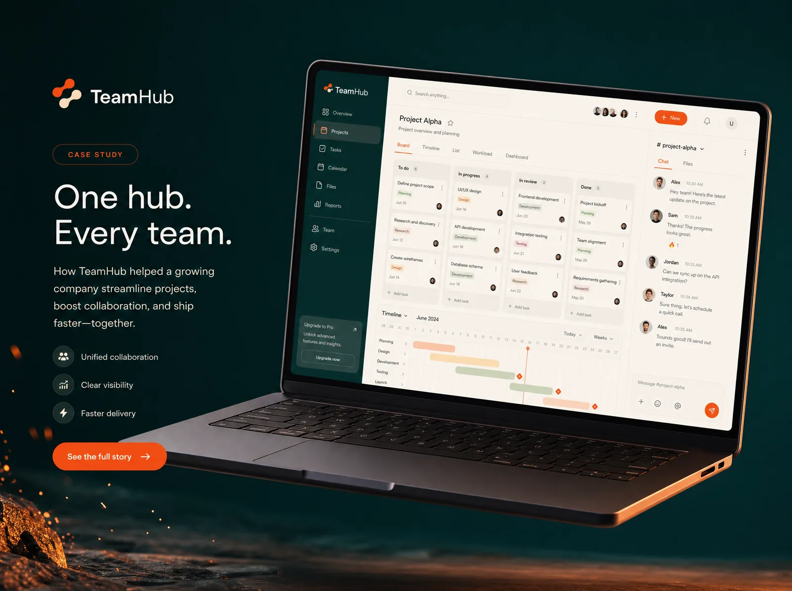
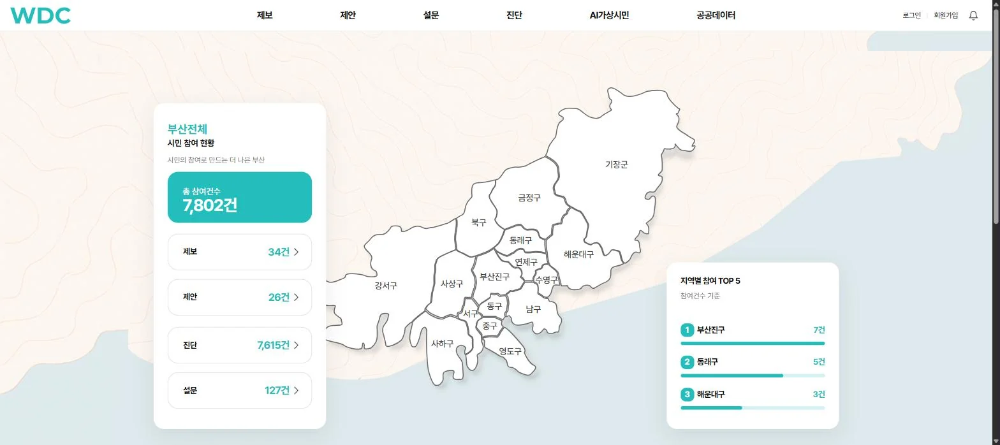
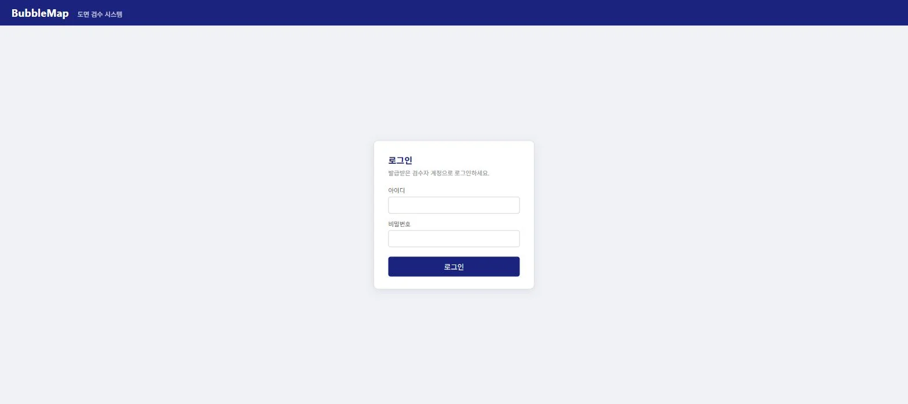
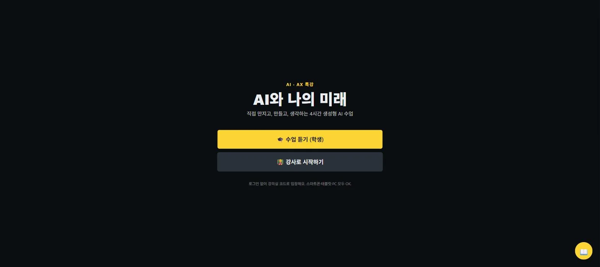
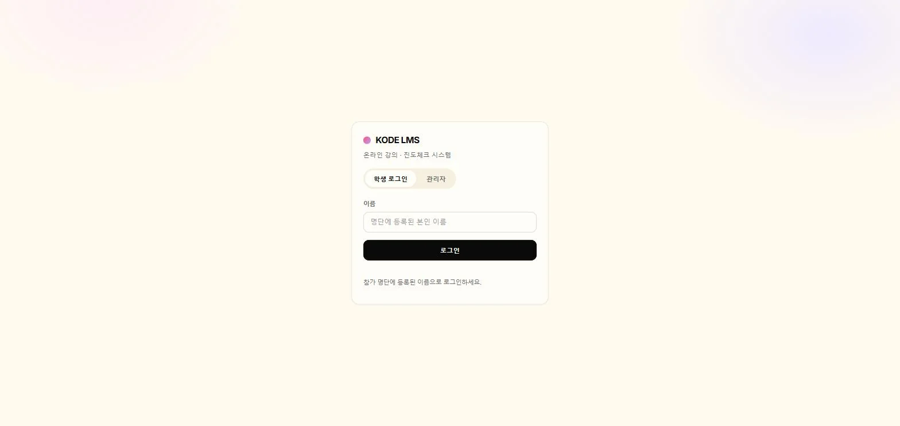

01개발
TeamHub
채널·티켓·스프린트·간트·체크리스트를 한곳에 모은 자체 협업 플랫폼. 지금 우리 팀이 매일 쓰는 도구입니다.
자체 프로덕트
우리가 만든 걸, 우리가 가르칩니다. 부산에서 웹·앱과 자체 프로덕트를 짓고, 학교와 기업 현장에 그대로 전합니다.
우리가 하는 일
design.kodekorea.kr · 부산참여플랫폼우리는 강의를 팔지 않습니다. 현장에서 쓰는 소프트웨어를 직접 만들고, 그 경험을 그대로 수업으로 가져갑니다.

01채널·티켓·스프린트·간트·체크리스트를 한곳에 모은 자체 협업 플랫폼. 지금 우리 팀이 매일 쓰는 도구입니다.
시민이 우리 동네 문제를 제보·제안·진단하는 공공 참여 플랫폼. 지역별 참여 현황을 지도로 한눈에 보여줍니다.

03도면 위 버블맵으로 검수 항목을 표시하고 추적하는 도면 검수 시스템. 검수자 계정 기반의 협업 워크플로.

04‘AI와 나의 미래’. 강사가 강의실 코드를 열면 학생 화면에 퀴즈·투표·AI 실습이 실시간으로 뜨는 생성형 AI 수업 도구.

05수강생 명단으로 로그인하는 온라인 강의·진도체크 시스템. 강의 운영과 학습 현황을 한 곳에서 관리합니다.
부산기계공고 인공지능, 정보영재원 로봇 수업까지 — 교실에서 직접 학생들을 가르칩니다. 수업은 KODE LMS·AI 특강 도구로 이어집니다.
현장에서 쓰는 소프트웨어를 짓습니다. 기획부터 디자인, 개발, 배포, 운영까지 한 팀이 끝까지.
다음 세대를 키웁니다. 학교 현장 출강부터 실시간 수업 도구까지, 교육을 제품으로 만듭니다.
팀·학교의 현재 상태와 목표 사이의 격차를 봅니다. 설문이 아니라 실제 코드와 수업 현장을 봅니다.
필요한 것을 직접 만듭니다. 웹·앱, 협업 도구, 수업 도구까지 — 기존 제품을 파는 대신 현장에 맞게 짓습니다.
허준클라우드 위에서 직접 배포하고 운영합니다. 외부 호스팅 비용 없이, 출시가 끝이 아니라 시작이 됩니다.
만든 것을 학교와 팀에 가르칩니다. 교실에서 나온 피드백이 다시 다음 제품의 재료가 됩니다.